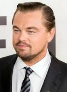
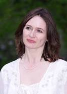

Music
Shutter Island: Music from the Motion Picture was released on February 2, 2010, by Rhino Records. The film does not have an original score. Instead, Scorsese's longtime collaborator Robbie Robertson created an ensemble of previously recorded material to use in the film.
According to a statement on Paramount's website: "The collection of modern classical music [on the soundtrack album] was hand-selected by Robertson, who is proud of its scope and sound. 'This may be the most outrageous and beautiful soundtrack I've ever heard.' [Robertson stated]."
A full track-listing of the album can be seen below. All the musical works are featured in the final film.
Production
Shutter Island was mainly filmed in Massachusetts, with Taunton being the location for the World War II flashback scenes. Old industrial buildings in Taunton's Whittenton Mills Complex replicated the Dachau concentration camp. The old Medfield State Hospital in Medfield, Massachusetts was another key location. Cawley's office scenes were the second floor of the chapel during the late evening. Lights were shone through the windows to make it look like it was daytime. The crew painted the hospital's brick walls to look like plywood. This served the dual purpose of acting as scenery and blocking the set from view of a local road. The crew wanted to film at the old Worcester State Hospital, but demolition of surrounding buildings made it impossible. Borderland State Park in Easton, Massachusetts was used for the cabin scene. The film used Peddocks Island as a setting for the story's island. East Point, in Nahant, Massachusetts was the location for the lighthouse scenes. Filming ended on July 2, 2008.
Genre
Shutter Island is a period piece with nods to different films in the film noir and horror genres, paying particular homage to Alfred Hitchcock's works. Scorsese stated in an interview that the main reference to Teddy Daniels was Dana Andrews' character in Laura, and that he was also influenced by several very low-budget 1940s zombie movies made by Val Lewton. The main frame of the plot resembles that of William Peter Blatty's The Ninth Configuration, as well as The Cabinet of Dr. Caligari. La Croix noted that Shutter Island was a "complex and puzzling" work which borrowed from genres as diverse as detective, fantasy, and the psychological thriller.
Storyline
The implausible escape of a brilliant murderess brings U.S. Marshal Teddy Daniels (Leonardo DiCaprio) and his new partner (Mark Ruffalo) to Ashecliffe Hospital, a fortress-like insane asylum located on a remote, windswept island. The woman appears to have vanished from a locked room, and there are hints of terrible deeds committed within the hospital walls. As the investigation deepens, Teddy realizes he will have to confront his own dark fears if he hopes to make it off the island alive.
Cast
-

Leonardo Di Caprio
-
Ben Kingsley
-

Emily Mortimer
-
Mark Ruffalo
Box Office
The film opened #1 at the US box office with $41 million, according to studio estimates. The movie gave Scorsese his best box office opening yet. The film remained #1 in its second weekend with $22.2 million. Eventually, the film grossed worldwide $294,803,014 and became Scorsese's second highest-grossing film worldwide.
Release
The film was scheduled to be released by Paramount Pictures in the United States and Canada on October 2, 2009. Paramount later announced it was going to push back the release date to February 19, 2010. Reports attribute the pushback to Paramount not having "the financing in 2009 to spend the $50 to $60 million necessary to market a big awards pic like this", to DiCaprio's unavailability to promote the film internationally, and to Paramount's hope that the economy might rebound enough by February 2010 that a film geared toward adult audiences would be more viable financially.
The film premiered at the 60th Berlin International Film Festival as part of the competition screening on February 13, 2010. Spanish distributor Manga Films distributed the film in Spain after winning a bidding war that reportedly reached the $6 million to $8 million range.